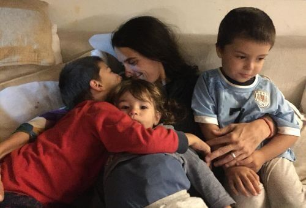

La historia de León
Las peripecias de una “Leona y un León"
León nació y necesitaba de una operación urgente con el Dr. Peña. Para obtener el contacto, su madre, Jujy Fabini, inició una aventura a la cual se sumaron figuras como José Mujica, Roberto Canessa, Eduardo Strauch y la familia Zitarrosa.
Entrevista a Jujy Fabini en radio El Espectador:
